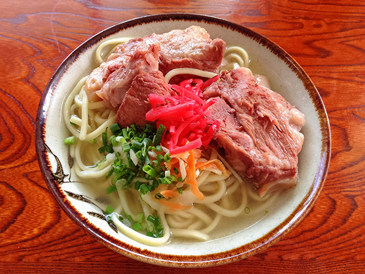
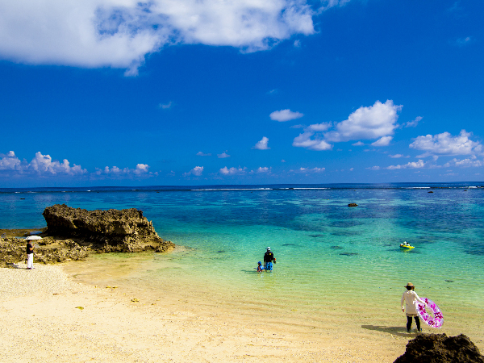
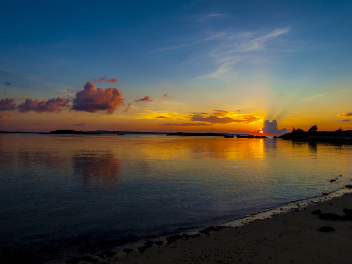

もっと楽しみたい沖縄の魅力を紹介！
定番の観光スポットやお店以外にも、もっともっと沖縄にはたくさんの魅力があります。
地元の人しか知らないようなビーチやお店を知ると、沖縄を２倍も３倍も楽しむことができます！
春夏秋冬楽しめる沖縄のちょっとディープなスポットを紹介
 もっと食べる（そば処 すーまぬめぇ）
もっと食べる（そば処 すーまぬめぇ）

沖縄で一度は絶対に食べたいソーキそば。
店舗は店主の祖母の家という、築60年の琉球家屋。
仏壇のある座敷にテーブルを並べた空間で、沖縄そばを味わえる。
スープは鰹節を使用し、後味はさっぱり。
別添えのフレッシュなよもぎで爽涼感もアップ。
住所／沖縄県那覇市国場40-1
営業時間／11時～16時、土・日～18時（売り切れ次第終了）
休日／月
もっと遊ぶ（イムギャーマリンガーデン・ビーチ）

沖縄県宮古島といえば白砂の広がるビーチを想像する方もが多い中、
少し個性派のビーチとして紹介したいのが「イムギャーマリンガーデン」。
ここは天然の入り江を生かした海浜公園であり、波の穏やかなビーチは子連れの海水浴にもピッタリ！
また、「イムギャーマリンガーデン」は絶景ポイントとしても有名！
住所／沖縄県宮古島市城辺友利６０５−２
もっと見る（大浦湾からのサンセット）

大浦湾はジュゴンや日本最大級の貴重な縄文青サンゴの群集、
多数のクマノミが生息するクマノミ城などがありダイバーに人気。
また昼間の顔とは別に、実はサンセットが美しいことでも有名。
アクティビティ後にサンセットを見レバ満足度も2倍に！
住所／沖縄本島中央部東岸、沖縄県名護市南部に位置
もっと買う（デポアイランド）

美浜アメリカンビレッジ内、フォトジェニックなリゾートタウン！
130店舗もの個性的なショップが集結する街。
今、話題の壁画のフォトスポットや、 海岸沿いの遊歩道でフォトジェニックな沖縄に出会える！
住所／沖縄県中頭郡北谷町美浜（字）９−１
営業時間／営業時間／10:00～21:00
年中無休